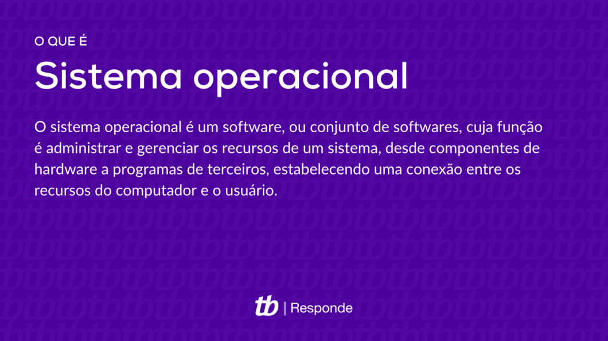

O que é um Sistema Operacional?
A resposta para esta pergunta vai um pouco além de “um programa para o computador ou o celular”, como o Windows ou o Android. Esse tipo de software é encarregado por fazer a interface entre usuário e hardware, sem código binário ou linguagem de máquina. Saiba mais sobre o que são os sistemas operacionais.

Definição de Sistema Operacional
O sistema operacional é um software, ou conjunto de softwares, cuja função é administrar e gerenciar os recursos de um sistema, desde componentes de hardware e sistemas de arquivos a programas de terceiros, estabelecendo a interface entre o computador e o usuário.
Entenda como um “computador” qualquer máquina de processamento automático de dados, como um desktop, notebook ou celular e um console de videogame, por exemplo.
O sistema operacional introduz uma camada de abstração entre o hardware e o usuário, que transforma comandos no mouse, teclado e solicitações do sistema, como gerenciamento de recursos (CPU, memória RAM), em linguagem de máquina, enviando instruções ao processador.
Este último os traduz para código binário, executa os comandos e envia as respostas como informações que aparecem na sua tela.
Um sistema operacional contém componentes divididos entre os para o usuário (como bibliotecas, programas e interface) e as instruções que compõem o seu núcleo (kernel).
O que é Kernel
A grosso modo é a ponte entre usuário e hardware, mas não somente. O kernel compõe a parte central do programa e responde por tarefas cruciais, como:
-
Estabelecer a camada de abstração de baixo nível (linguagem de máquina) com o hardware;
-
Gerenciar recursos como processador, RAM, sistemas de arquivos e dispositivos de entrada e saída (monitor, teclado, mouse, impressora, etc.);
-
Gerenciar processos (execução) de programas;
-
Gerenciar o uso de dispositivos, memória do sistema e chamadas dos programas, definindo quais têm prioridade.
Qual a diferença entre kernel e firmware?
Muita gente confunde kernel com firmware…
Embora possam conversar entre si são coisas diferentes. Um firmware ou software embarcado é um conjunto de instruções programadas diretamente no hardware, que contém parâmetros específicos para a operação de um determinado dispositivo.
Por exemplo, em um sistema operacional a BIOS (Sistema Básico de Entrada e Saída) e a UEFI (Interface Extensível Unificada de Firmware) são exemplos de firmware, pois comportam instruções voltadas para a operação do hardware de um computador
Um firmware pode ser operado pelo usuário da mesma forma que um kernel (o Linux per se é só o kernel, a interface varia conforme a empresa responsável pela distribuição, também chamada de distro), mas suas aplicações são distintas.
3 exemplos de sistema operacional
Tirando os que todo mundo conhece, vejamos 3 exemplos de sistemas operacionais:
- Unix
Desenvolvido por Ken Thompson, Dennis Ritchie, Douglas McIlroy e outros programadores do Bell Labs, em 1969, o Unix foi um dos primeiros sistemas multitarefa preemptiva, que encerra processos que esgotaram o tempo de uso e salva seus dados para depois, passando a executar em fila. Deu origem a uma gigantesca família de sistemas que inclui o Linux, o BSD e FreeBSD, que serviu de base tanto para o macOS quanto para o Orbis OS (do PS4), o Solaris da Oracle e o Xenix da Microsoft.
- MS-DOS
Lançado em 1981, teve como base o 86-DOS de Tim Paterson e lançado em 1980, para computadores com o processador Intel 8086. A Microsoft o comprou por US$ 75 mil e o modificou para embarca-lo no IBM-PC 5150 (Bill Gates mentiu ao fechar contrato com a IBM, sobre já ter o MS-DOS). Rodava em computadores IBM-PC e foi o padrão até meados de 1990, quando foi absorvido pelo Windows 95 e permaneceu até o Windows ME; o Prompt de Comando, embora similar, não é um sistema em segundo plano.
- OS/2
Lançado em 1987 e desenvolvido por Microsoft e IBM, o OS/2 tinha interface gráfica e sucedeu o IBM PC DOS (a versão licenciada do MS-DOS). Pouco tempo depois, as empresas se separaram, por divergências. Os Windows 2.1 e 3.1 contavam com soluções semelhantes às do OS/2 e por um bom tempo, e IBM e Microsoft seguiram disputando o mercado de PCs, com alguns fatos estranhos no meio da história.
O OS/2 foi descontinuado pela IBM em 2001 e o suporte só foi encerrado em 2006, tanto que muitos caixas eletrônicos de bancos brasileiros ainda usam o sistema.
Fonte: Tecnoblog
Inicio da página